- 1. Chuẩn bị tài nguyên cho cuộc thi
- 2.Cấu hình cuộc thi của ban tổ chức
- 2.1.Tạo cuộc thi
- 2.2.Tạo câu hỏi
- 2.3.Tạo danh sách thí sinh
- 2.4.Vận hành cuộc thi
- 2.4.1.Import các câu hỏi vào cuộc thi
- 2.4.2.Import danh sách thí sinh vào cuộc thi
- 2.4.3.Khởi chạy cuộc thi
- 3.Hướng dẫn thí sinh làm bài trên hệ thống
- 3.1.Đăng nhập hệ thống
- 3.2.Tham gia cuộc thi
- 3.3.Thí sinh xem thông tin tổng quan về cuộc thi
- 3.4.Đặt câu hỏi với Ban Tổ Chức
- 3.5.Thông tin về một bài tập trong cuộc thi
- 3.6.Nộp bài và xem kết quả
- 3.7.Một số phản hồi của hệ thống khi thí sinh nộp bài
- 4. Bảng xếp hạng
-
Hệ thống chấm thi CMS (Contest Management System) là một hệ thống chấm bài mã nguồn mở được sử dụng trong nhiều kỳ thi lập trình quốc tế. CMS có thể được tiến hành kiểm tra lập trình trên các ngôn ngữ: Java, Pascal, C, C++, C#, Python2, Python3, Rust, Haskell. Để vận hành một cuộc thi trên hệ thống chấm thi CMS cần thực hiện các bước sau:
1. Chuẩn bị tài nguyên cho cuộc thi
− Làm đề và bộ test
+ Tạo các câu hỏi cho cuộc thi, các câu hỏi phải được định dạng .pdf
+ Bộ test: Tương ứng với mỗi câu hỏi là 1 bộ test, trong đó mỗi một test bao gồm dữ liệu vào được bắt đầu input0, input1, …,và dữ liệu ra được bắt đầu output0, output1, …
− Tạo danh sách thí sinh thi:
+ Tạo trên bảng tính excel gồm các trường thông tin: Username, FirstName, LastName, Email, Password. -
2. Cấu hình cuộc thi của ban tổ chức
2.1. Tạo cuộc thi
Trang web dành cho người quản trị có dạng địa chỉ IP:8889, ví dụ : http://127.0.0.1:8889/
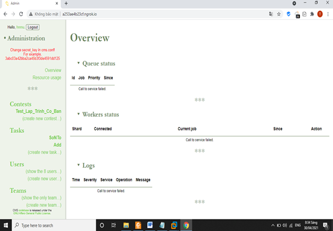Để thêm một cuộc thi mới, ấn chuột vào “create new contest trong bảng bên trái, cửa sổ mới sẽ hiện ra như sau:
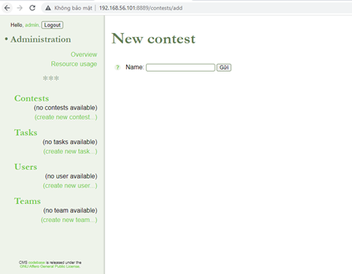
Địa chỉ : http:// 127.0.0.1:8889/contest/addName: Đặt tên cho cuộc thi sau đó chọn nút “Gửi”
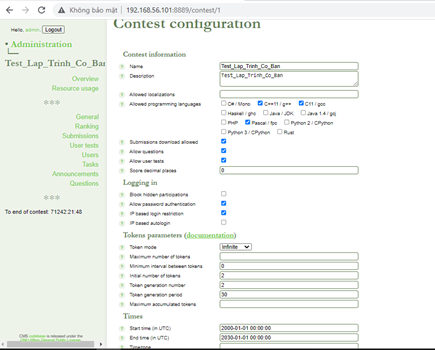Trong bảng cấu hình bên tay trái, ban tổ chức có thể cấu hình nhiều thông số.
\ 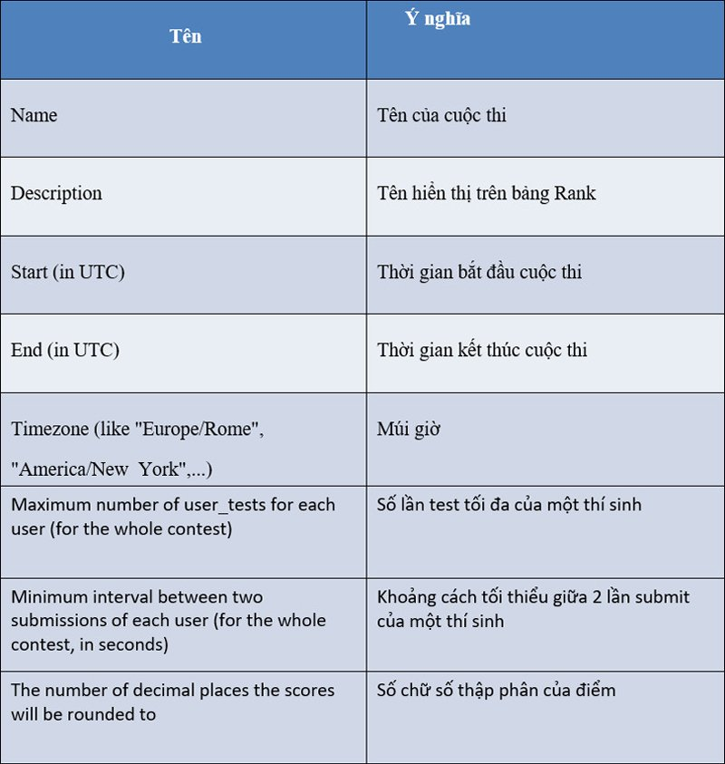
Các thông số này sẽ là giá trị ngầm định cho mọi bài toán (task).
Nếu task nào yêu cầu khác, có thể cấu hình riêng cho từng task. Giá trị thông số cấu hình riêng sẽ được áp dụng cho riêng task đó. Các thông số không được cấu hình (không có giá trị) sẽ nhận giá trị ngầm định của hệ thống. Bảng ý nghĩa của các thông số được liệt kê như sau : -
2.2. Tạo câu hỏi
Để thêm câu hỏi mới truy cập vào địa chỉ http:// 127.0.0.1:8889/contest/task
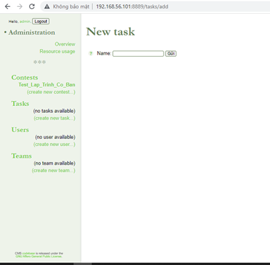Sau đó đặt tên cho bài toán và nhấn nút “Gửi”
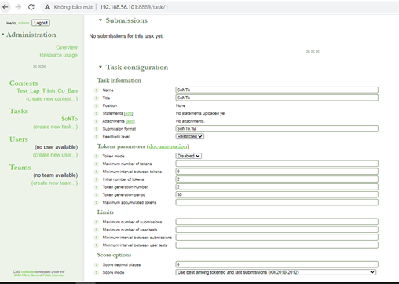Trong đó có các thông số trong cấu hình bài toán cần quan tâm:
+ Name: Tên hiển thị
+ Title: tiêu đề
+ Statements: Nội dung của tệp đề bài đính kèm (định dạng tệp dưới dạng .pdf)
+ Limits: Giới hạn
+ Maximum number of submissions: Số lần nộp bài tối đa
+ Maximum number of user tests: Số lần test thử tối đa
+ Minimum interval between submissions: Khoảng thời gian tối thiểu giữa mỗi lần nộp
+ Minimum interval between user tests: Khoảng thời gian tối thiểu giữa mỗi lần test thử
+ Score decimal places: Cách định dạng của điểm
+ Time limit: Giới hạn thời gian
+ Memory limit: Giới hạn về bộ nhớ
+ Task type: Batch (bài thí sinh sẽ chấm lần lượt với 1 bộ input output)
+ Input file: tên file input, để trống nếu chọn đầu vào nhập từ bàn phím
+ Output file: tên file output, để trống nếu chọn đầu ra hiển thị lên màn hình
+ Score Type: Sum (Tổng điểm của các bộ test)
+ Score Parameters: Điểm của mỗi bộ testTiếp theo, chọn “Add a test case” để đưa bộ test vào hệ thống
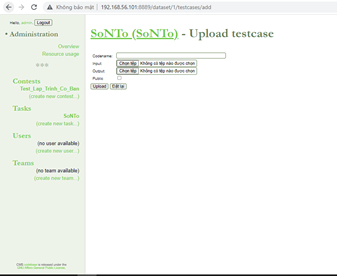Codename: vị trí của bộ test, bắt đầu đánh từ số 0
Input: đường dẫn đến input
Output: đường dẫn đến output
Public: có đánh dấu, công khai bộ test
Sau khi chọn xong, ấn nút Upload để hoàn thành. -
2.4. Vận hành cuộc thi
2.4.1. Import các câu hỏi vào cuộc thi
Để import các câu hỏi vào cuộc thi mới truy cập vào địa chỉ http:// 127.0.0.1:8889/ contest/1/tasks
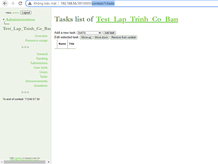Sau đó ấn vào “Add task”
2.4.2. Import danh sách thí sinh vào cuộc thi
Để import thí sinh vào cuộc thi mới truy cập vào địa chỉ http:// 127.0.0.1:8889/ contest/1/users
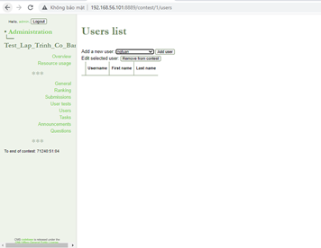Sau đó ấn nút “Add user”
2.4.3. Khởi chạy cuộc thi
Người quản trị viên khởi chạy dịch vụ ContestWebServer để thí sinh đăng nhập vào để lấy đề và gửi bài.
-
3. Hướng dẫn thí sinh làm bài trên hệ thống
3.1. Đăng nhập hệ thống
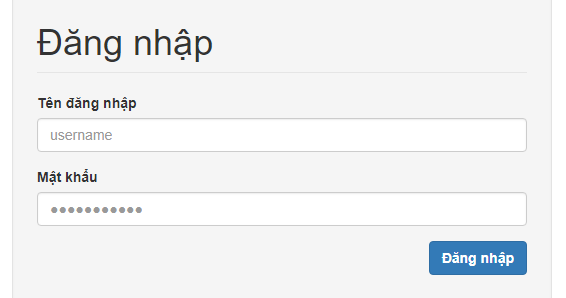1. Đầu tiên, các bạn vào địa chỉ http://hnmucms.camdvr.org hoặc http://14.162.209.87
2. Sau đó đăng nhập
o Tên đăng nhập: Số báo danh
o Mật khẩu: Được gửi qua email cá nhân của thí sinh3. Bạn có thể lựa chọn ngôn ngữ ở nút góc trên bên phải nếu muốn.
-
3.2. Tham gia cuộc thi
Tương tự lúc đăng kí tham gia cuộc thi, khi cuộc thi bắt đầu tính thời gian làm bài, ở phía bên phải của trang sẽ hiển thị phần Cuộc thi đang diễn ra. Các bạn nhấn vào nút Tham gia ngay để bắt đầu làm bài
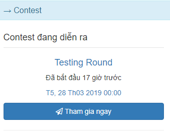3.3. Thí sinh xem thông tin tổng quan về cuộc thi
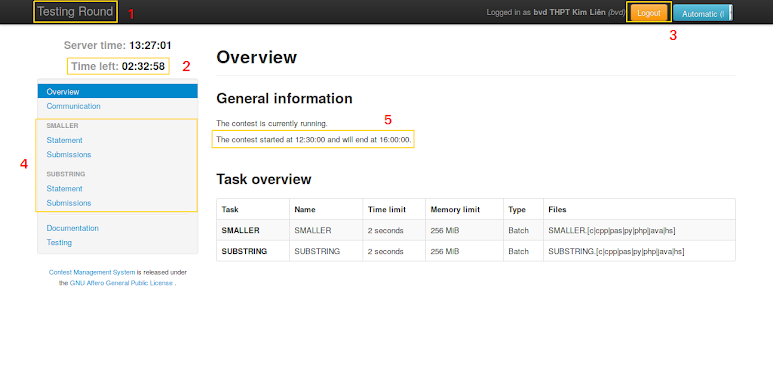Trên màn hình tổng quan về cuộc thi có các thông tin sau:
1. Tên cuộc thi
2. Thời gian còn lại (giờ: phút: giây)
3. Nút đăng xuất
4. Danh sách các bài tập trong kỳ thi
5. Thông tin thời điểm bắt đầu và kết thúc
3.4. Đặt câu hỏi với Ban Tổ Chức
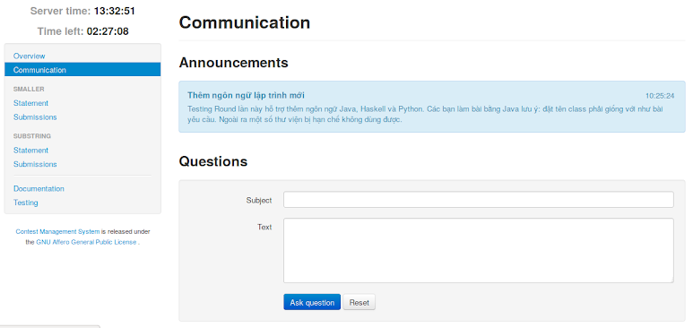Chức năng này chỉ hiển thi khi được cho phép Thí sinh có thể vào phần Communication và đặt câu hỏi với Ban tổ chức.
3.5. Thông tin về một bài tập trong cuộc thi
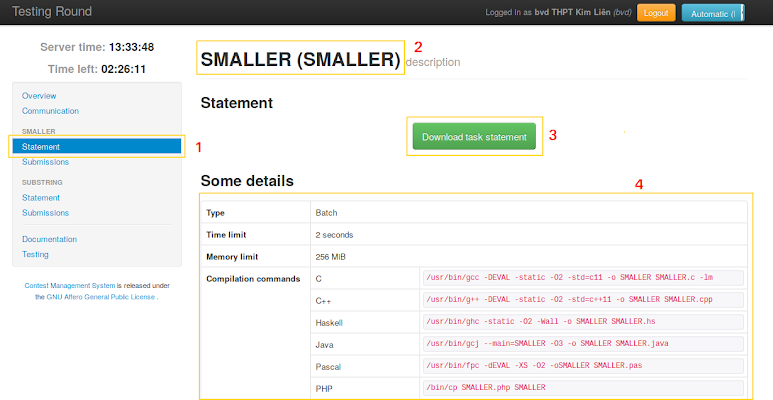Với mỗi bài tập trong cuộc thi (ở phần bên trái của màn hình), nhấn vào Statement để tải đề bài và xem thông tin của bài.
Trên màn hình thông tin của mỗi bài của thông tin sau:
1. Menu Statement của bài 2. Tên bài tập 3. Nút tải đề bài 4. Giới hạn thời gian, giới hạn bộ nhớ, và lệnh biên dịch với mỗi ngôn ngữ3.6. Nộp bài và xem kết quả
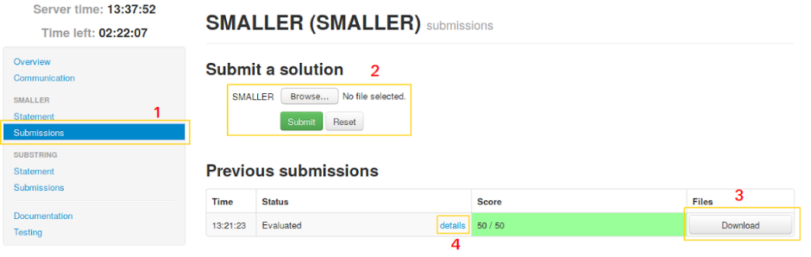1. Nhấn vào Submissions của bài tập để nộp bài
2. Chọn file mã nguồn và nhấn nút Submit để nộp bài
3. Có thể nhấn vào nút Download để tải về lại mã nguồn đã nộp
4. Nhấn vào details để xem thông tin chi tiết về kết quả của bài làmThí sinh có thể xem kết quả chi tiết bài làm của mình.
Kết quả mỗi lần nộp bài: Nếu có lỗi cú pháp hệ thống sẽ báo lỗi biên dịch. Nếu chương trình chạy thành công sẽ hiển thị điểm đạt được trong tổng số 50 điểm tối đa cho mỗi bài (kết quả tính theo % số test đúng).
Trong ví dụ trên, bài làm của thí sinh đạt được 50/50 điểm (đúng hoàn toàn các bộ test).
Ví dụ: Kết quả chi tiết của bài làm.
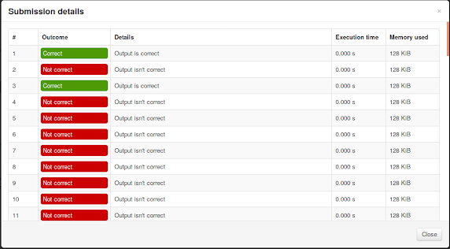Ví dụ: Kết quả của trình biên dịch
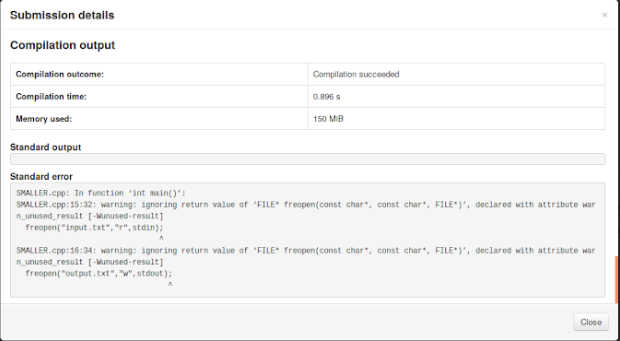BTC sẽ giới hạn thời gian tối thiếu giữa 2 lần gửi bài liên tiếp là 60 giây để tránh hiện tượng spam. Nếu các bạn submit liên tục sẽ nhận được thông báo như hình bên dưới
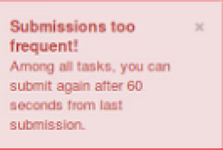3.7. Một số phản hồi của hệ thống khi thí sinh nộp bài
Một số thông báo có thể gặp khi biên dịch bài làm:
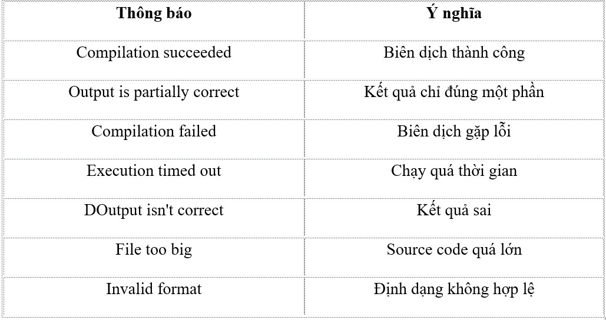 -
4. Bảng xếp hạng
(link http://hnmucms.camdvr.org:8080/contest/2/ranking_ph hoặc http://14.162.209.87:8080/contest/2/ranking_ph )
2.3. Tạo danh sách thí sinh
Để thêm thí sinh mới truy cập vào địa chỉ: http:// 127.0.0.1:8889/user/them user/
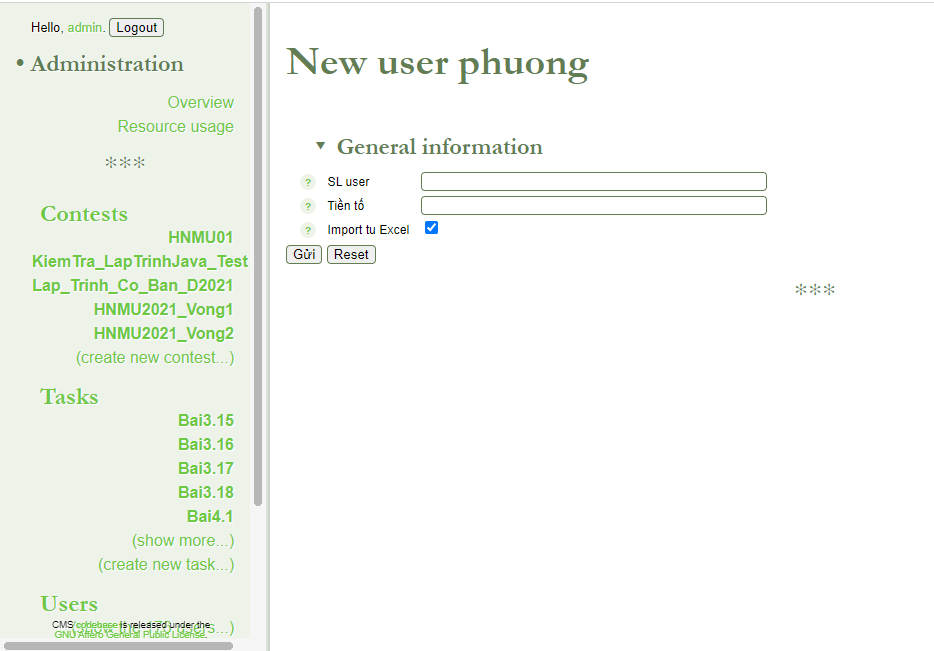Chọn “Import từ Excel” rồi nhấn nút “Gửi”.
//